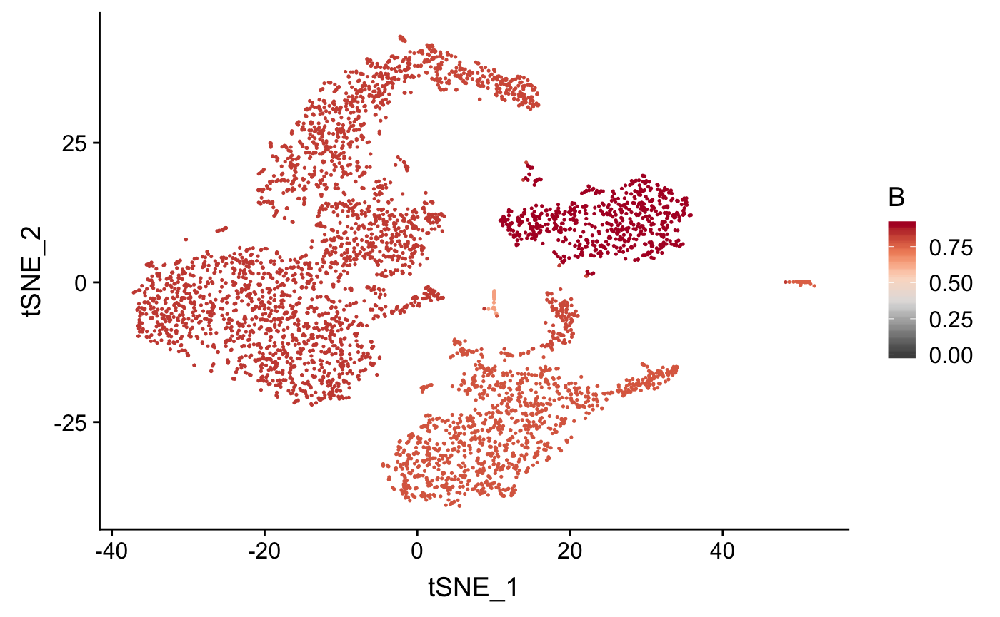
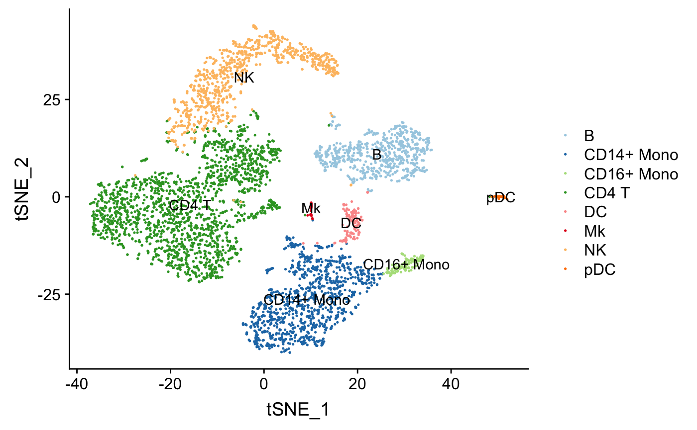
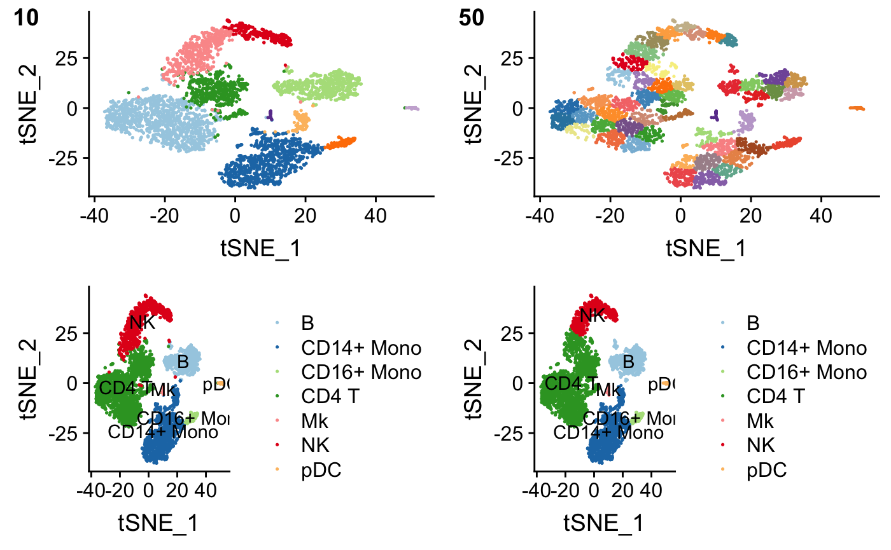
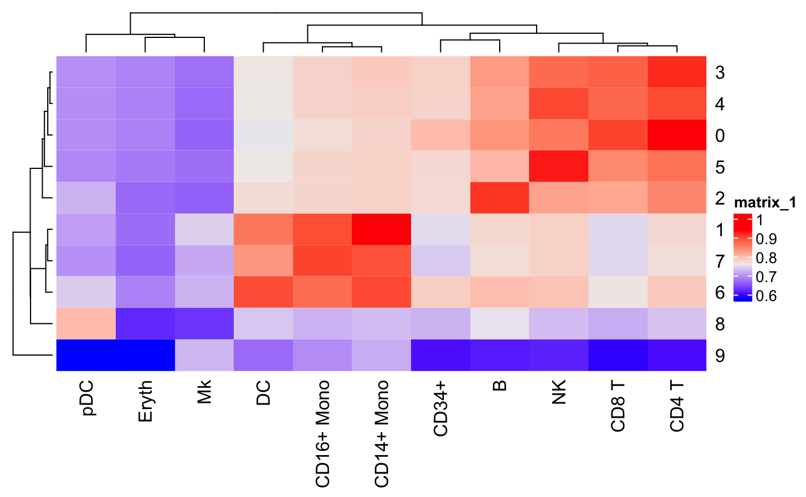
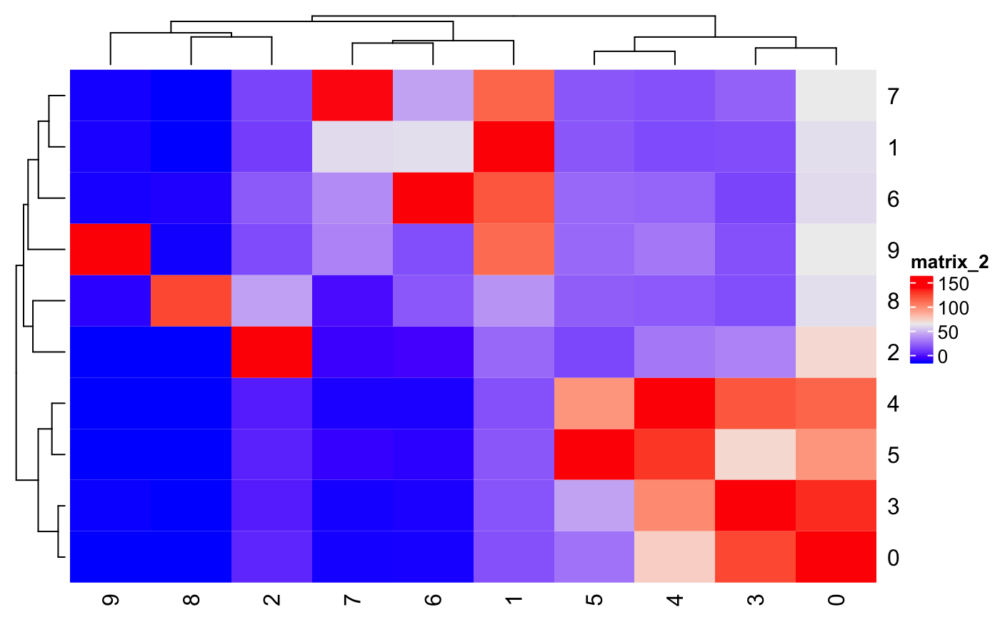
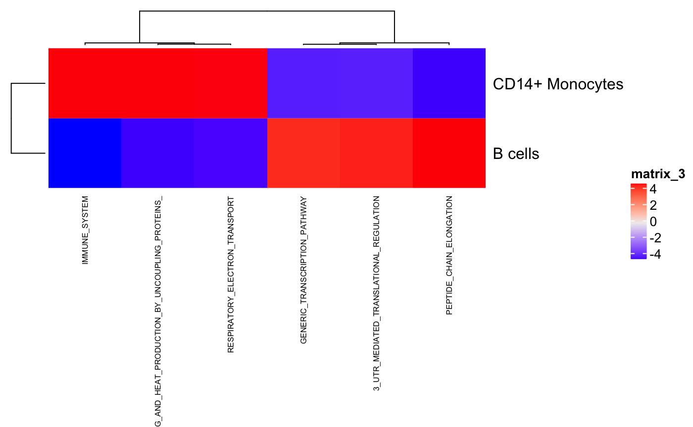

vignettes/visualizations.Rmd
visualizations.RmdThe direct output of clustify is a matrix of correlation coefficients. And for clustify_lists and clustify_nudge, positive scores. Built-in functions are available to visualize this results.
library(clustifyR)
library(here)
full_pbmc4k_matrix <- readRDS(here("full_pbmc4k_matrix"))
full_pbmc4k_meta <- readRDS(here("full_pbmc4k_meta"))
# clustify
res <- clustify(
input = full_pbmc4k_matrix,
metadata = full_pbmc4k_meta,
cluster_col = "cluster",
ref_mat = cbmc_ref
)
# plot_cor generates a plot per reference cluster
g <- plot_cor(
res,
full_pbmc4k_meta,
cluster_col = "cluster",
x = "tSNE_1",
y = "tSNE_2"
)
length(g) == ncol(cbmc_ref)
#> [1] TRUE
g[[1]]
# plot_best_call to view called identities in one plot
plot_best_call(
res,
full_pbmc4k_meta,
do.label = T
)
# intentionally overcluster and clustify to assess idents
# in this case, overclustered local averages agree with cluster clustify results
overcluster_test(
full_pbmc4k_matrix,
full_pbmc4k_meta,
cbmc_ref,
cluster_col = "cluster",
n = 5
)
res <- clustify(
input = full_pbmc4k_matrix,
metadata = full_pbmc4k_meta,
cluster_col = "cluster",
ref_mat = cbmc_ref
)
plot_cor_heatmap(res)
res2 <- clustify_lists(
input = full_pbmc4k_matrix,
cluster_info = full_pbmc4k_meta,
cluster_col = "cluster",
marker = pbmc4k_markers,
marker_inmatrix = F
)
plot_cor_heatmap(res2)
# gene lists can be converted from gmt files (Broad)
list_reactome <- gmt_to_list(here("c2.cp.reactome.v6.2.symbols.gmt"))
full_pbmc4k_avg <- average_clusters(
full_pbmc4k_matrix,
full_pbmc4k_meta,
cluster_col = "classified"
)
res <- plot_pathway_gsea(
full_pbmc4k_avg[,1:2],
list_reactome,
topn = 3)
# returns dataframe of gsea analysis
res[[1]][1:2,1:2]
#> GLYCOGEN_BREAKDOWN_GLYCOGENOLYSIS TRANSLATION
#> B cells -1.535351 3.262957
#> CD14+ Monocytes 1.340259 -3.207698
# and plot
res[[2]]